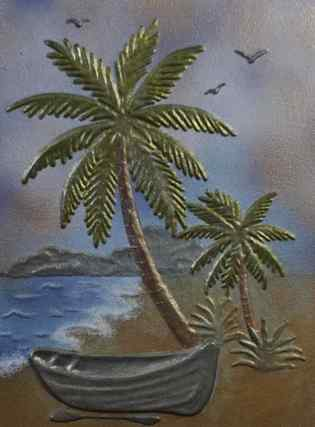

NICOLETA FILIP ART
AMANECER
Paisaje costero en relieve que representa un escenario tropical con palmeras, mar y una pequeña embarcación frente a la costa.
Sobre la obra
AMANECER presenta una escena junto al mar protagonizada por dos palmeras, una pequeña embarcación y el paisaje costero al fondo.
El relieve aporta volumen a las palmeras, la vegetación y la embarcación, mientras la composición combina cielo, agua y tierra en una escena de carácter sereno.
Presentación artística
La composición sitúa las palmeras en primer plano y dirige la mirada hacia el mar y el horizonte, creando sensación de profundidad.
La construcción en relieve permite que la luz destaque las diferentes texturas y volúmenes de la escena.
Ficha técnica
- Año
- 2026
- Dimensiones
- 30 × 40 cm
- Soporte
- Madera
- Técnica
- Técnica estándar
- Categoría
- Paisajes
Si deseas recibir información sobre esta obra, puedes solicitarla directamente.
SOLICITAR INFORMACIÓN →